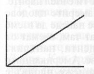
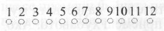
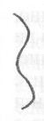

Беседа 3754 от 3877 · Беинса Дуно
По новия път
Отче наш
Аз мога да любя
(Упражнения с дишането и ръцете.)

Казвам: този ъгъл има една възможност. Хората, които вървят по права линия, трябва да бъдат много разумни. По права линия човек много мъчно може да върви. Вие казвате: “По правия път”. Вземете по правия път да ходите и ще видите колко право вървите. Като вървите напред, в движението ще видите, че линията е крива. После при говоренето например. Вие в речта си говорите и произнасяте Добро. Как трябва да се произнесе Добро. Доброто има начин да се произнесе. Ако произнасяш както не трябва, не ползва. Или имате думата Правда. Правда не се произнася както Добро или както Любов. Правдата произнасяш по един начин, Доброто произнасяш по втори начин и Любовта по трети. Говориш за Истината. Думата Истина по друг начин ще я произнесеш. В български думата истина има 3 значения: Истина; изстина – когато човек изстине, трябва да го разтриват. И третото значение имате, като махнеш из-, остава -тина, тиня. В английски думата истина [truth] има друго значение. Ютъ [youth] значи млад, младини. Трутъ, чрез младината се познава Истината. Слоговете в Природата са произлезли. Казваш: “Какво означава Истина?” Българинът казва: “Оооо”. О – означава, че го боли нещо, но и когато се учудваме, пак казваме: “Оооо”. Кое от двете е? Какво значи оо ооооо ооооо? Ти произнесеш един слог.
Аз наблюдавам всички, които вървите в Новото Учение. В Новото Учение, по този път, по който вървите, нищо няма да добиете. Ще добиете или тиня, малко кал, или ще изстинете, а много малко ще дойдете до Истината. Най-първо всинца нямате въздържание. Бърже си давате мнението. Казвате: “Пет пари не струва”. Колко струваше Христос? 33 сребърника. Сега казвате: “Пет пари не струва”. Пет пари едно време беше доста. Едно време с 5 пари може да вземеш едно кило череши, после един хляб се е вземал с 5 пари. Сега колко трябва да дадеш? Аз ви гледам, взели сте вашите възгледи от векове и сега ги говорите. Говорите за една реалност, която не е сегашна, минала някога. Дошъл някой бръмбар и мислиш да станеш владика или министър. Пък то е чужда идея, далечна в миналото и сега ти дошло – пак да бъдеш министър. Не ти трябва министър, нещо по-ново. Да станеш министър, значи трябва да станеш слуга. Ако станеш министър на просветата, ще идват учители от гимназията, от прогимназията, от отделенията, ще идват и разни инспектори, оплаквания, какви ли не оплаквания. Като седиш 3-4 години, ще станеш нетърпелив – този изпъдиш, онзи изпъдиш, и някой път ще изгубиш хармонията на характера. Ако станеш владика, какво ще добиеш? Ако стане владика, млади момичета ще му целуват ръка като на свят човек. Колко е свят, то е въпрос. Ние гледаме по човешки. Да стане владика, да му целуват ръка. Може като целунеш ръката на един владика, да се благословиш. А много пъти, като целунеш, ще платиш нещо, освен че няма благословение. Но като целунеш ръката, ще те накажат. Защо ще те накажат? Ще турите най-доброто. Кой от вас не иска да бъде владика. Детето като се роди, най-първо е много скромничко, редови е. То казва: “Да бъде вашата воля”. Колкото расте туй дете, започва да се събужда и то носи наследствените си черти. Вие се сърдите на детето, но вие сте вложили в туй дете вашите онаследени черти. Едно дете мяза на баща си. Баща му е малко сприхав и то унаследило тази сприхавост, и то се показва така. Някой казва: “Да се обърнем към Бога”. И гледам, като се обърнат към Бога, пак остават същите. Сприхавият и при Бога като е, пак е сприхав. Разложеният, и без Бога е разложен, и при Бога пак е разложен. Жабата, като иде при Господа, си остава жаба. Рибата, като иде при Господа, си остава риба. Птицата си остава птица, волът си остава вол. Мислите ли, че една подвързана книга, която вземам от Народната библиотека, ще се промени нейната подвързия. Някои книги имат хубава подвързия. Не е външната подвързия на нещата, но каква форма завзема човек. Формата показва пътя, по-който човек е минал. Ако гледате мухите например, в мухата има доста чувства, развит хумор има, после обича да се радва. Мухата много обича да се шегува. Някой път мухите вкъщи принасят полза. Принасят вреда, но и принасят малка полза. Майката се е разсърдила, иска да набие детето, да му каже нещо лошо. Мухата кацне на носа на майката, тя я бутне. Като се занимава с мухата, няма да се скара с детето. Доста умни са мухите. Мухата казва: “Бъди умна, защото думата, която ще кажеш, мъчно се плаща”. Ти казваш: “Защо Господ създаде тия мухи, не може ли без тях?” Мухата кацне на носа и казва: “Господ ти създаде носа да мислиш. Щом започнеш да мислиш, няма да кацам на носа ти, щом не мислиш, ще кацам на носа”.
Едно разсъждение: защо кацат слънчевите лъчи на плодовете? Като мухи кацат постоянно. Лъч след лъч кацат и заминават. От тия кацания върху цветовете, всяко растение приема ония блага, които всеки слънчев лъч носи в себе си. Дойде една болка във вас. Болката е едно приятно чувство. Болката внася мекота, внася благородство. Ти като боледуваш, влизаш в положението на хората, започваш да мислиш за начините, по които можеш да се освободиш. Казвате: “Може ли в този свят без страдания?” Ти си първият, който може без страдания. Ти искаш без страдания – може без страдания. Ще трябва най-първо да се научиш как да спиш. Аз намирам, че както птиците спят, е най-доброто спане. Както спят животните и човекът както спи – не е хигиенично – или на лявата, или на дясната страна, или на корема си ще легнеш. Както птиците седят, е най-добре. Най-хубавото е, когато като птица спиш. Като легнеш денем, и после станеш неразположен. Ти си легнал и като си се проточил, няма еднакви допирни точки към Земята. Понеже всичките точки на Земята не са еднакво стоплени или всичките точки нямат благодат. Ако минеш по пътя, дето е минал един престъпник или един лош човек, в тези стъпки той е оставил нещо много лошо. И ти ако минеш след него, ще възприемеш от това лошо. Или някъде минала някоя мечка, мечката е много добра. Или минал някой вълк. Или минала някоя боа, ако е в тропическите места, или минал някой тигър. Като не си внимателен, че стъпиш на неговите стъпки, ще приемеш чертите или качествата му. Минаваш по една зелена трева, ще приемеш хубавото. Ако ходиш по бодливите тръни, ще бъдеш неразположен. Ние на Земята сме дошли и искаме един живот – да оправим хората. Как ще оправим хората? Вие искате да проповядвате Новото Учение. Как ще проповядвате Новото Учение? Или как ще проповядвате идеята за Бога? Как ще проповядвате идеята за Любовта? Казвате: “Да говорим за Бога”. Най-мъчно се говори за Бога. Трябва да представиш какво нещо е Господ. Какво нещо е Господ, не знаем. Проповядваме за туй, което не знаем. Казвате: “Господ създаде света”. – “Беше ли там, като го създаде?” – “Не бях”. Простите хора казват, че Господ създаде света, а учените хора казват, че от само себе си се е създал. И тогава имате въпроса. Вашият баща казва, че ви е създал. Една жаба, която излиза из водата, водата ли създава жабата? Един човек, който излиза от въздушния свят, въздухът ли създава човека? Това са условия, при които живее. Откъде дойде този човек? Първоначалният зародиш не е бил на Земята. Той е дошъл от далечното пространство, може би преди хиляди години, и чака условия. Един ден баща ти е ял някоя ябълка, круша и ти по крушата или по ябълката от устата на баща си и майка си се посаждаш, и започваш да растеш в утробата на майка си. Един ден се раждаш човек. Когато едно дърво израсте, трябва да благодари на почвата. Зависи от почвата. Зависи от коя област на Вселената иде човека. Някои хора идат от Венера и любовни стават. Някои идат от областта на Юпитер и са честолюбиви. Някои идат от областта на Меркурий и търговци стават. Някои идат от областта на Марс и са войнствени. Някои идат от Сатурн и са подозрителни. Някои идат от Месечината и те въображение имат. Някои идат от Слънцето. Всички не идете от Слънцето. Някои, които идат от Слънцето, са пълни с живот и са най-големи оптимисти в живота. Те носят най-голямо благословение в себе си. Тези, които идат от Меркурий, малък е Меркурий, с търговия се занимават. Венера е почти като Земята. Някои от Земята са дошли и са големи материалисти. Казва: “Защо си такъв материалист?” Той идва от Земята, качествата на Земята носи. Всичко събира. Който дойде от Земята, той е бирник. Все трябва да оставиш нещо на Земята. Тия работи трябва да се съединят.


Сега вие по някой път седите и се занимавате с погрешките на хората. Погрешката е в твоя кръст. Погрешката е в твоите гърди. Погрешката е в задницата, погрешката е в лакътя, погрешката е в пръста. Виж погрешките в себе си и ги изправи. Някой път подадеш нещо с ръката си, пък никаква музика, никаква динамика няма в движението. Когато давате нещо, как трябва да се даде? Ако даваш на едно дете една ябълка, хубаво трябва да я дадеш, понеже един ден тази ябълка по същия начин ще ти я дадат. Ти тогава ще бъдеш докачен, че по такъв начин са ти дали. Както даваш на това дете ябълката, така и на тебе ще ти дадат. В Природата всяко нещо, което направиш, ще се върне и върху тебе, всяка дума, която кажеш, може би и след 10 години ще ти се върне. Всеки поглед ще ти се върне. Така както погледнеш хората, и тебе така ще погледнат. Всичко, което ние правим, един ден ще дойде отгоре ни. Казваме: тия хора не живеят добре. Вие съдържате повече хора в себе си, отколкото има на Земята. На Земята има 2 милиарда хора, а вие имате 30 милиарда същества във вас. Всеки от вас носи половината от душите в света. Мъжът носи половината от хората – 30 милиарда и жената носи 30 милиарда, всичко 60 милиарда. Като дойдат децата, даром им давате. Христос казва: “Тия овци Твои бяха, на Мене ги даде.” Като се ражда един син, от баща си ще вземе, може би ще му даде един милиард същества – и майката един милиард и ще започнат те да припечелват. Няма да вземате нещата буквално. Тези 30 милиарда, те са в Невидимия свят. Те тук са малки, но всяка една душа има една нишка, чрез която ти говори. Тази душа не живее в тебе, но тази душа е в интимно отношение с тебе. Ти си като в център. И от този център изтичат 30 милиарда нишки, които са свързани с тия души, говорят ти. И някой път много работи говорят, ти чуваш, но не разбираш. Както вятърът когато духа, чувате, но не разбирате. Няма нещо определено. Дотолкоз доколкото ставаме съзнателни, дотолкоз разбираме. Сега говорим за Бога. Разбирам Господ да Го няма в тебе... Има една нишка горе в главата; щом говориш, ти обръщаш внимание, натискаш на звънеца, искаш да каже нещо, но нищо не казва. Ако можеш да кажеш нещо разумно, кажи го. Ако не можеш да кажеш – по-добре мълчи. Аз ви говоря за един начин, за едно вътрешно самовъзпитание. Вие се занимавате с погрешките на другите. Погрешките обират човека. Дотолкоз, доколкото може да видиш погрешките на другите и да ги изправиш в себе си, то е благословение. Като видиш една погрешка и ти като един прокурор си, ти си създаваш най-лошата карма. Днес на 10 души видиш погрешките и Господ ти казва: “Ти ще платиш половината”. Ако всеки имал да плаща по 10 000 лева, ти трябва да платиш половината. Днес платиш на 10 души, утре платиш на 10 души и най-после те хванат, турят те в затвора. Ти казваш: “Какво трябва да правя?” Не се занимавай с погрешките на хората. Занимавай се с Доброто на хората. Аз се чудя на вас. Занимавайте се с Доброто! Със злото не се занимавайте! Лошото оставете настрана. Не мислете за мечката. Като срещнеш мечката, мисли, че е светица. Понеже е много свята, качи се на крушата, като я срещнеш. Ако мислиш, че мечката е лоша, ще те изяде. Ти ў плащаш дълговете на тази мечка. Казвам: законът е, че вие сте свободни да мислите постарому, само че много полици ще има да плащате. По този начин много полици ще плащате. Мислете за Доброто, което е в хората. Ние казваме: “Култура”. Кой е повод във войната? В тази война, между християнските народи, няма по-голямо безобразие в света. Във вестниците пишат как всички тия хора се избиват като животни. Не се погребват, по 20-30 души разкъсани на парчета, съберат частите. Хората се избиват, а ние казваме: “Да дойдат тия хора, че да дойде свободата”. Значи да умре баща ти и майка ти, да умрат всичките, и ти да останеш да видиш Добро в света – гдето няма да го бъде.
Говорите за народни добрини. В какво седи народното Добро? Народното Добро седи в благословението на Любовта, която иде отгоре, или в Любовта, в която цялата Вселена живее. Казвате: “Какво нещо е Любовта?” В Любовта цялата Вселена живее, Любовта обгръща цялата Вселена. Що е Любов? Любовта обгръща цялата Вселена и в нея живее. Всичките енергии на Вселената, на тия Слънца, черпят от Любовта. Говорим за Любовта и мислим пак частично: “Да дойде Любовта при мен”. Казвам: на ден Любовта ви посещава 300 хиляди пъти и като ви посети 300 хиляди пъти, едва ще образува една секунда. Като ви посети 300 хиляди пъти, едва ще имате една секунда на Любовта. Какво може да се научи за една секунда? Един човек ми казва: “Пари ми трябват”. – “Колкото пари трябват, аз ще ти дам. Колкото пари искаш, ще ти дам. Ако искаш една торба – и една торба турски лири ще ти дам”. И му казвам: “Дай си плана. За какво искаш да ги употребиш?” Казва ми: “Ц-ц-ц”. Казвам: “По този начин ще създадеш зло на себе си и на мене. Както е твоята програма, още хиляда ще те глобят. Дай един план”. – “Ще се оженя за една красива мома”. – “Там ще направиш злото. Ще се ожениш за красивата мома и ще станеш министър. Там ще направиш голяма пакост”. Той ми казва: “Ти не искаш да дадеш, че увърташ работите”. Не ги увъртам. Вие искате от Господа и някой път би ви дал. Молиш се, молиш се, представи една програма. Тия пари ще ги употребиш за своето зло. Сега и на вас казвам: ако на всеки едного дам по хиляда, какво ще ги направите? За втория път – една задача: да пишете за какво ще ги употребите. Представете си вече, че съм ги дал тези пари, само че трябва да се сгъстят, трябва голямо налягане, но считайте, че ги имате. Пишете за какво ще ги употребите. Този човек, който ми искаше пари, той не знаеше за какво да ги употреби. Ако той ми беше казал, че от хилядата лири ще направи – да направи някакъв цяр да лекува хората, на прав път е. Той иска да се жени за младата мома – ако направи някакъв цяр за човечеството и да ходи да лекува, нищо не ми коства да му дам хиляда лири. Хиляда лири са една играчка. В дадения случай считам, че съм много богат. Хиляда лири да му дам, но няма да ги употреби за благото на човечеството.
Минавам някой път някъде и някои камъчета ги премествам. А някои ги оставям на мястото, не ги мърдам, защото, ако тия камъчета ги преместя, съвсем друг ред на нещата в мен ще стане. Всяко нещо, което правиш, трябва да бъде разумно. Всички трябва да бъдем разумни. Понеже Бог, Който създаде света, е най-разумното Същество, всяко нещо, което Той е направил, е разумно. Хората, което са внесли, те не са вложили разумно. Всичките тия изопачени неща, които ни мъчат, те са човешки работи, не са Божествени. Божественото носи радост, веселие, мир, здраве. Сега вие мислите: “Толкоз години се мъчихме”. Животът с мъчение не става. Да живееш, е най-лесната работа. Човек се мъчи само като влезе в познанието на Доброто и злото. Да познаваш Доброто и злото, то е един дълбок процес. “Това е живот вечен, да познаеш Единаго, Истиннаго Бога”. В живота, и да го познаеш, отношенията се вързват. Щом познаеш злото, образува се вътрешно отношение и не може да се освободиш от живота. Трябва да разбираш туй зло, за да знаеш как да постъпиш. Ако не знаеш как да постъпиш със злото, знаеш ли как ще се обходи то с тебе? Да кажем, срещате един човек, който е голям юнак. Ти си слаб, подиграваш се с него. Изведнъж ти удари една плесница и ти се търкулиш на земята. Вие се приближавате при злото, удари ти една плесница и ти паднеш на земята. Като се приближаваш при злото, ще се приближаваш с благоговение, то е мощна сила. Ти казваш: “Туй зло, защо е така?” Като дойде големият юнак, ще държиш устата си затворена, нямаш право да говориш. То казва: “С мен нямаш право да говориш”. Като влезеш при Доброто, и тогава трябва да знаеш как да говориш. Сега вие току изведнъж разрешавате въпроса. Критикувате туй зло. Защо е туй зло и защо е туй Добро? Най-после казвате: “Аз защо съм дошъл?” Най-първо дойдохте да се запознаете с Живота и се отказахте от този Живот. Първите хора се отказаха от Живота, но те поискаха да се запознаят с Доброто и злото. Христос, като дойде на Земята, не отиде да се запознае с Доброто и злото, но отиде да се запознае с Живота. Когато се запознаваше първата жена със злото, черният адепт ў казва: “Ти като се запознаеш с него, ще бъдеш силна като Бога, ще твориш, Божествена ще бъдеш”. Тя се отдаде на тази съблазън. Като дойде Христос, той Му казва: “Ти ще се запознаеш с Живота, но ще бъдеш един долен човек, страдания ще имаш. Каквото имаш, ще изгубиш, и живота ще изгубиш. Ще те изпъдят и всичкото си богатство на Земята, ще го дадеш”. Христос казва: “Ще приема Живота със загуба”. Ева прие злото с подкуп, че ще спечели. Христос прие Живота и каза: “И да загубя, искам да се запозная с живота.”
Казвам: Истината е там, гдето губим всичко. Гдето печелим, то е Доброто и злото. Онези, които искат да спечелят всичко, те вървят по кривия път. Онзи, който изгубва всичко, за да познае Живота, той е на пътя на Любовта. Трябва да изгубим всичко онова старо – от познание Добро и зло – за да влезем в Живота. Това е Живот вечен да познаем Бога. Като познаеш Бога, Той ще те благослови и като те благослови, ще знаеш. Казвам: тръгнете по пътя на загубите, за да се запознаете с Живота. Не да ги искате. Ако речеш да хвъркаш с един килограм тежест, душите, които умират, се разширяват, те тежат 30 грама. Следователно тази душа из етерното поле може да се качи. Един човек с 60 килограма не знае къде може да се качи. Трябва да освободим ума си от известни идеи, мисли и желания, които са тежки. От всичко туй трябва да се освободим. Искаш владика да станеш. Не ти трябва да станеш владика. В света има само един владика – то е Господ. Той не иска много владици. Един владика е достатъчно, няма какво да ставаш Божество. Ако станеш един ангел, да посещаваш Слънчевите системи, планетите, световете – то е най-хубавото нещо засега. Да станеш пътник в далечните пространства, както Земята пътува, както Слънцето пътува – то е най-хубавото. Вие разберете сега: трябва да пътувате по закона на Любовта и трябва да се откажете от големия багаж. Много малко багаж ви е потребен, излишно няма да имате.
Излишно няма да имате. Препоръчвам ви сега – по Новия Път. По стария път не отивайте към центъра на Земята. Голямо налягане има там. Ако влезете в центъра на Земята, дето има 10, 20, 30, 40, 50 атмосферни налягания, какво щастие ще имате? Трябва да се освободите от голямото налягане. Налягане има в злото. Злото произвежда най-голямото налягане в света. Всеки човек, който следва пътя на злото, има налягане. Казва някой: “Неразположен съм”. Иска да се самоубие. Всичко има – и пари има, и деца има, и казва: “Не искам да живея, искам да се самоубия”. Налягане има в живота. Да се избавим от налягането и да влезем в разширението на Божествената Любов, която ни показва пътя на Истината. То е пътят на странстването в Божествената Вселена, гдето ще видим онова, което Бог е създал заради нас.
Да си изправим живота, понеже всичко, което Бог е допуснал в света, досега е било все Добро. Нашата погрешка е, че ние казваме, че всичко не е Добро.
Отче наш
37-ма лекция от Учителя, държана на 9.VI.1943 г. сряда 5 ч. с., Изгрев